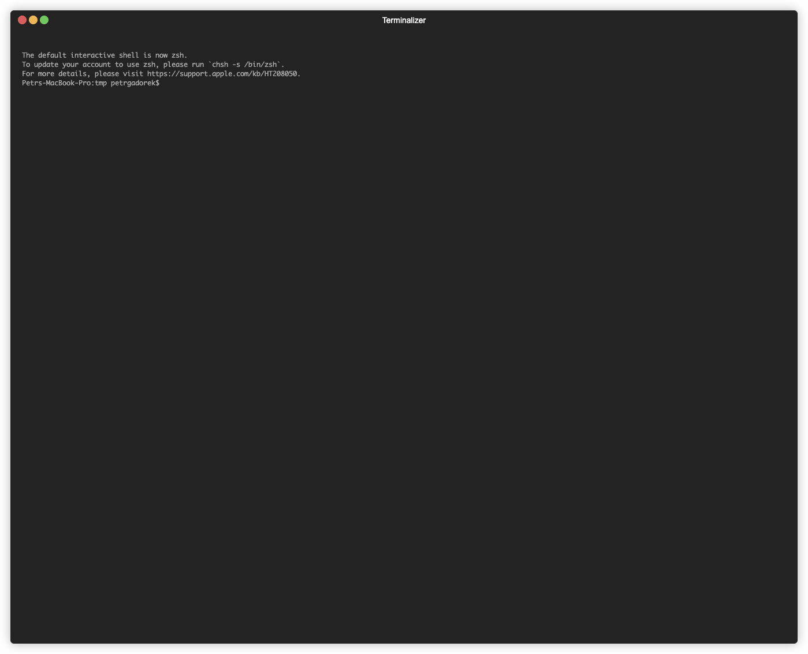

The new and shiny
ESP-IDF Installation Manager
EIM
cross-platform cli tool

Every parameter can be set as CLI argument
Usage: idf-im-cli [OPTIONS]
Options:
-c, --config
-t, --target
-i, --idf-versions
--tool-download-folder-name
--tool-install-folder-name
--idf-tools-path
Path to tools.json file relative from ESP-IDF installation folder
--tools-json-file
Path to idf_tools.py file relative from ESP-IDF installation folder
-n, --non-interactive
[possible values: true, false]
-m, --mirror
url for download mirror to use instead of github.com
--idf-mirror
url for download mirror to use instead of github.com for downloading esp-idf
-v, --verbose...
Increase verbosity level (can be used multiple times)
-l, --locale
Set the language for the wizard (en, cn)
--log-file
file in which logs will be stored (default: eim.log)
-h, --help
Print help (see a summary with '-h')
-V, --version
Print version
You can provide a config file
```toml
path = "/tmp/esp-new/"
idf_path = "/tmp/esp-new/v5.3/esp-idf"
tool_download_folder_name = "dist"
tool_install_folder_name = "tools"
target = ["all"]
idf_versions = ["v5.3"]
tools_json_file = "tools/tools.json"
idf_tools_path = "./tools/idf_tools.py"
mirror = "https://github.com"
idf_mirror = "https://github.com"
```
Easy to use
Simple wizard will guide you through the installation process
multilanguage
The CLI application is available in English and Chinese, and the list of languages can be easily extended
CLI 应用既可以用英语和中文来交互，并且语言列表是很容易扩展的

Please report any hickups as github issues
Releases:

Docs:
Thanks for your attention